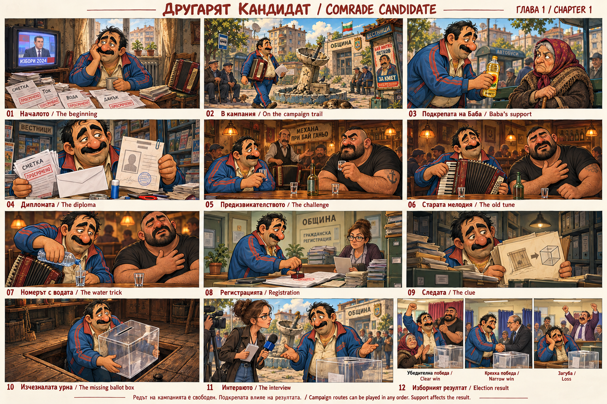

← Back to Main /
Към главното меню
Open full image /
Отвори цялото изображение
Download PNG /
Изтегли PNG
Chapter 1 Storyboard /
Сториборд — Глава 1
Comrade Candidate /
Другарят Кандидат

Concept storyboard of the playable chapter. Campaign routes can be played in any order; support affects the result.
Концептуален сториборд на игралната глава. Редът на кампанията е свободен; подкрепата влияе на резултата.